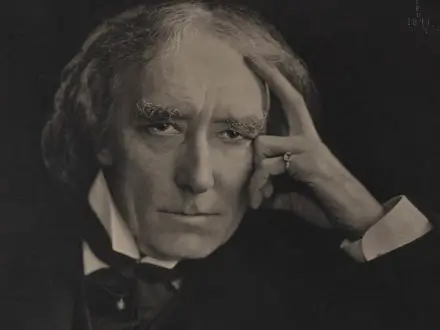
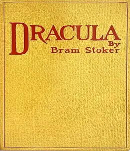
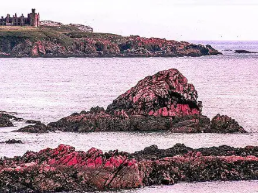
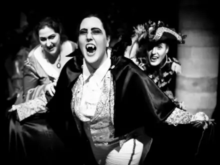
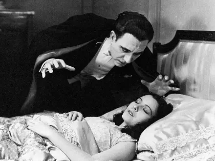
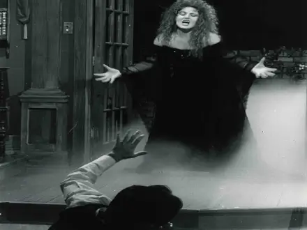
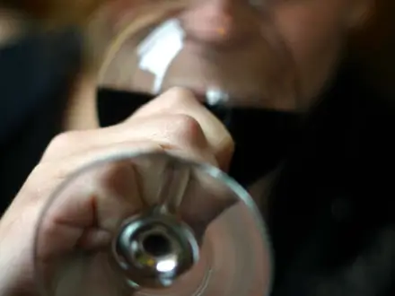
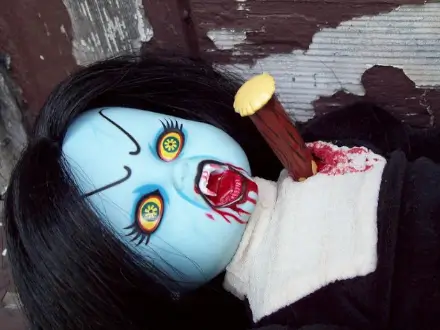

Scroll to read more
“Despair has its own calms”
“Oh, the terrible struggle that I have had against sleep so often of late; the pain of the sleeplessness, or the pain of the fear of sleep, and with such unknown horror as it has for me! How blessed are some people, whose lives have no fears, no dreads; to whom sleep is a blessing that comes nightly, and brings nothing but sweet dreams.” - Bram Stoker.
Early Career
Dublin Castle
After graduating he entered the Irish Civil Service at Dublin Castle, The Duties of Clerks of the Petty Sessions of Ireland which was based on his experience as a civil servant, was his first book. In 1876 Stoker met the actor Henry Irving and by 1878 had moved to London where he was acting manager at the famous Lyceum Theatre.
Sir Henry Irving
The Snake's Pass (1890)
Stoker published his stories since 1872, including the "Crystal Cup" (1872), his first horror tale "The Chain of Destiny" (1875), a collection of children's stories Under the Sunset (1881), and his first novel The Snake's Pass (1890), but he did not realize fame until the overwhelming success of Dracula (1897). The reasons for Dracula's success are many, and it has become a major focus for stage, musical and cinematic adaptations and, more recently, has become a major focus of academic criticism.
Dracula First Edition (1897)
Stoker was a regular visitor to Cruden Bay in Scotland between 1893 and 1910. His month-long holidays to the Aberdeenshire coastal village provided a large portion of available time for writing his books. Two novels were set in Cruden Bay: The Watter's Mou' (1895) and The Mystery of the Sea (1902). He started writing Dracula there in 1895 while in residence at the Kilmarnock Arms Hotel. The guest book with his signatures from 1894 and 1895 still survives. The nearby Slains Castle (also known as New Slains Castle) is linked with Bram Stoker and plausibly provided the visual palette for the descriptions of Castle Dracula during the writing phase. A distinctive room in Slains Castle, the octagonal hall, matches the description of the octagonal room in Castle Dracula.
Slains Castle
Dracula or The Un-Dead
Harker wanders Dracula's Castle
Jonathan Harker, a newly qualified English solicitor, visits Count Dracula at his castle in the Carpathian Mountains to help the Count purchase a house near London. Ignoring the Count's warning, Harker wanders the castle and encounters three vampire women and is seduced by the three female vampires, from whom he barely escapes after Dracula drives them away.
Harker gets attacked by Dracula's brides
Dracula sails to England
Harker awakens in bed; soon after, Dracula leaves the castle, abandoning him to the women. Harker escapes with his life and ends up delirious in a Budapest hospital. Dracula takes a ship for England with boxes of earth from his castle. The captain's log narrates the crew's disappearance until he alone remains, bound to the helm to maintain course. An animal resembling a large dog is seen leaping ashore when the ship runs aground at Whitby.
Lucy Westenra's letter to her best friend, Harker's fiancée Mina Murray, describes her marriage proposals from Dr. John Seward, Quincey Morris, and Arthur Holmwood. Lucy accepts Holmwood's, but all remain friends. Mina joins her friend Lucy on holiday in Whitby. Lucy begins sleepwalking. After his ship lands there, Dracula stalks Lucy. Mina receives a letter about her missing fiancé's illness, and goes to Budapest to nurse Harker. Lucy becomes very ill.
Dracula stalks Lucy (1931 spanish film)
Seward and Van Helsing about Lucy's condition (Dracula 1958)
Seward's old teacher, Professor Abraham Van Helsing, determines the nature of Lucy's condition, but refuses to disclose it. He diagnoses her with acute blood-loss. Van Helsing places garlic flowers around her room and makes her a necklace of them. Lucy's mother removes the garlic flowers, not knowing they repel vampires. While Seward and Van Helsing are absent, Lucy and her mother are terrified by a wolf and Mrs. Westenra dies of a heart attack; Lucy dies shortly thereafter.
After her burial, newspapers report children being stalked in the night by a "bloofer lady" (beautiful lady), and Van Helsing deduces it is Lucy. The four go to her tomb and see that she is a vampire. They stake her heart, behead her, and fill her mouth with garlic. Jonathan Harker and his now-wife Mina have returned, and they join the campaign against Dracula.
Lucy dies and becomes a vampire
Renfield lets Dracula inside the asylum
Everyone stays at Dr. Seward's asylum as the men begin to hunt Dracula. Van Helsing finally reveals that vampires can only rest on earth from their homeland. Dracula communicates with Seward's patient, Renfield, an insane man who eats vermin to absorb their life force. After Dracula learns of the group's plot against him, he uses Renfield to enter the asylum. He secretly attacks Mina three times, drinking her blood each time and forcing Mina to drink his blood on the final visit. She is cursed to become a vampire after her death unless Dracula is killed.
Dracula forces Mina to drink his blood
The men discover Dracula's coffins
As the men find Dracula's properties, they discover many earth boxes within. The vampire hunters open each of the boxes and seal wafers of sacramental bread inside them, rendering them useless to Dracula. They attempt to trap the Count in his Piccadilly house, but he escapes. They learn that Dracula is fleeing to his castle in Transylvania with his last box. Mina has a faint psychic connection to Dracula, which Van Helsing exploits via hypnosis to track Dracula's movements. Guided by Mina, they pursue him.
Van Helsing and Mina go to Dracula's Castle
In Galati, Romania, the hunters split up. Van Helsing and Mina go to Dracula's castle, where the professor destroys the vampire women. Jonathan Harker and Arthur Holmwood follow Dracula's boat on the river, while Quincey Morris and John Seward parallel them on land. After Dracula's box is finally loaded onto a wagon by Szgany men, the hunters converge and attack it.
Van Helsing kills Dracula's brides
Quincey stabs Dracula
After routing the Szgany, Harker slashes Dracula's neck and Quincey stabs him in the heart. Dracula crumbles to dust, freeing Mina from her vampiric curse. Quincey is mortally wounded in the fight against the Szgany. He dies from his wounds, at peace with the knowledge that Mina is saved. A note by Jonathan Harker seven years later states that the Harkers have a son, named Quincey.
Dracula's dies with a wooden stake through the heart